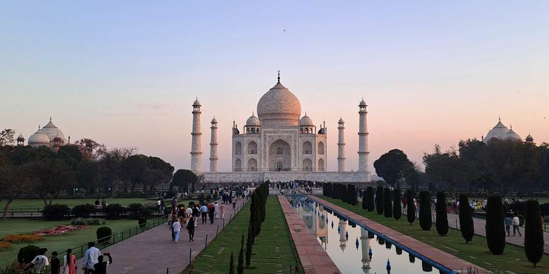
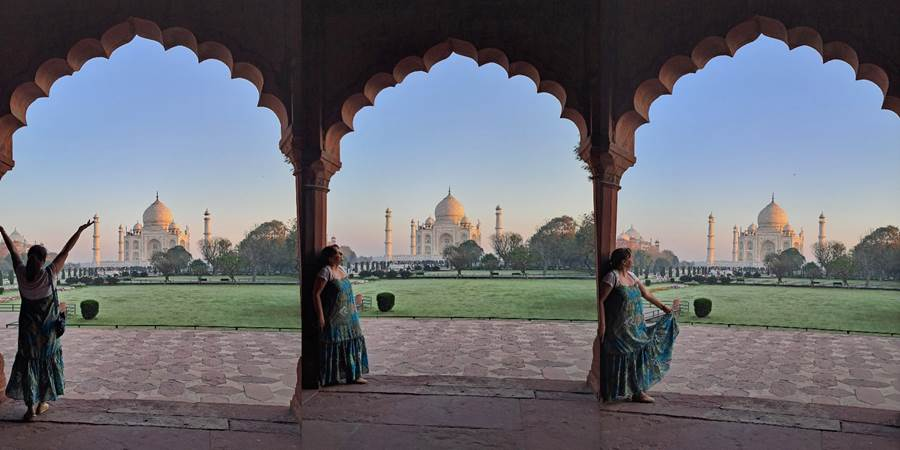
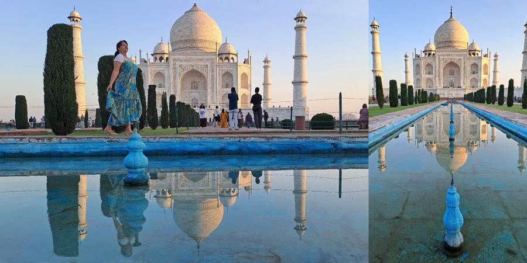
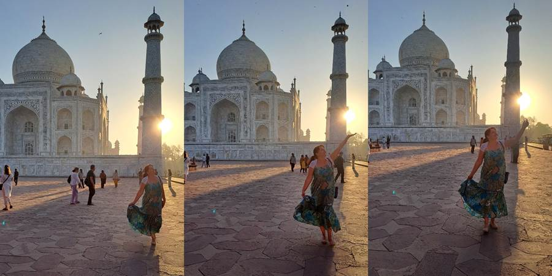
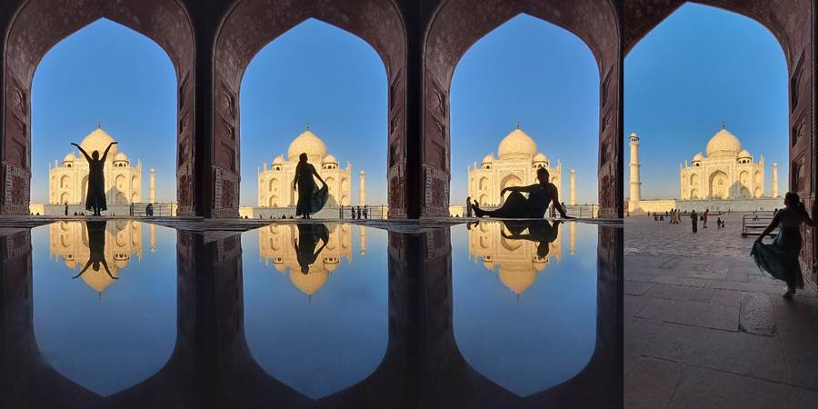

Deveti dan, Agra: ponovni susret sa Tadž Mahalom u zoru
Došla sa žurke u dva ujutru, ustajem u pet sati da vidim Tadž. Koliko ono beše ja imam godina? Još je mrak. Na ulici nigde nikog. Valjda će naići neki tuk tuk. Srećom nailazi i ja bez problema stižem do tačke A. Odatle golf kolima do ulaza. Sve teče glatko i evo mene i Tadža.
Zdravo Tadž. A on okupan u ružičastoj svetlosti. Kasnije postane zlatan. Menja boje. Ovo je nešto. Tako sam srećna što sam došla. I mirno je. Više meni u glavi jer ne žurim. Turista ima. Ali ipak manje. Ovo je uživancija. Kao da me je neko nagradio za trud, sve fotke su nestvarne. Ima ih i sa izlazećim suncem i sa odsjajem u vodi.
Još naišla na profi fotografa koji je, za razliku od onog juče (ja ogromna, Tadž mrvica, ja u nekim debilnim pozama u koje me je nameštao), napravio brutalne slike slikajući telefon u telefon pa neki odsjaj. Svi se oduševili i bilo im krivo što se nisu naterali ujutru da idu.
I tako imala sam i svoj “me time” sa Tadžom i baš mi je prijalo. Morala sam biti pažljiva jer smo u devet kretali u novi grad, Vrindavan, al stigla sam na vreme u hotel, čak i da doručkujem.





Ne propustite sledeću avanturu!
Kad Sandra krene u novi kraj sveta, vaš inbox prvi sazna. Prijavite se i stižu vam sve nove priče mejlom.